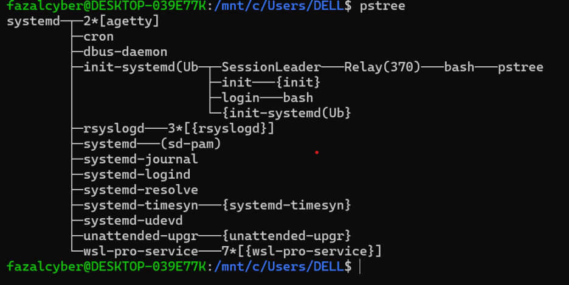

Linux Process Management Commands – Explained with Examples
Process Commands
Command | Description |
& | Runs a command in the background |
ps | Lists active processes |
pstree | Displays process tree |
kill | Sends signal to a process by PID |
killall | Kills all processes by name |
pkill | Kills processes using name or attribute |
trap | Captures signals inside shell scripts |
pgrep | Finds process ID by name |
nice | Starts process with specific priority |
renice | Changes priority of running process |
jobs | Lists background jobs |
bg | Sends job to background |
fg | Brings background job to foreground |
nohup | Runs process even after terminal closes |
screen | Manages multiple terminal sessions |
tmux | Like screen, but more advanced |
top | Live system process monitor |
htop | Enhanced version of top |
bottom | Modern alternative to top |
glances | Cross-platform real-time monitoring |
gtop | Terminal dashboard for system metrics |
procs | Rust-based alternative to ps |
lsof | Lists open files and which processes use them |
ps aux | Detailed info of all running processes |
systemctl | Controls systemd and services |
Input & Output Examples
Input:
sleep 30 &
Output:
Input:
ps
Output:
Input:
pstree
Output:

Input:
kill 4567
Output:
No output if successful. Kills process with PID 4567.
Input:
killall firefox
Output:
No output if successful. Kills all Firefox instances.
Input:
pkill -f python
Output:
No output if successful. Kills all Python processes.
Input:
trap "echo 'Caught SIGINT'" SIGINT
Now press Ctrl+C
Output:
Input:
pgrep sshd
Output:
Input:
nice -n 10 ./heavy.sh
Output:
Starts the script with low CPU priority (no direct output unless logged).
Input:
renice 5 -p 1234
Output:
Input:
jobs
Output:
Input:
bg %1
Output:
Input:
fg %1
Output:
Input:
nohup ping google.com &
Output:
Input:
screen
Output:
Input:
tmux
Output:
ctrl+d
Input:
top
Output (partial):
Input:
htop
Output:
Input:
btop
Output:
Input:
glances
Output:
Input:
gtop
Output:
Input:
procs
Output:
Input:
lsof
Output:
Input:
ps aux
Output:
Input:
systemctl status ssh
Output: